สถาปัตยกรรมและการออกแบบ Admin Portal
เว็บคอนโซลสำหรับการบริหารจัดการระบบ ScamGuard แบบรวมศูนย์สำหรับผู้ดูแลระบบและนักวิจัย เพื่อควบคุมโมเดล AI ตรวจสอบรายงานการหลอกลวง และติดตามการทำงานของระบบแบบ Real-time
สถาปัตยกรรมและการออกแบบ Admin Portal
เว็บคอนโซลสำหรับการบริหารจัดการระบบ ScamGuard แบบรวมศูนย์สำหรับผู้ดูแลระบบและนักวิจัย เพื่อควบคุมโมเดล AI ตรวจสอบรายงานการหลอกลวง และติดตามการทำงานของระบบแบบ Real-time
1. บทบาทและหน้าที่ในระบบ
Admin Portal เป็น 1 ใน 4 คอนเทนเนอร์หลักของระบบ ScamGuard (ตาม C2 Container Diagram) ทำหน้าที่เป็นส่วนต่อประสานสำหรับ:
- ผู้ดูแลระบบ (Admin / Super Admin): จัดการบัญชีผู้ใช้ ตรวจสอบ Audit Log และควบคุมความปลอดภัยของระบบ
- นักวิจัยและวิศวกร AI (AI Engineers / Researchers): ควบคุมการปล่อยโมเดล AI (Model Deployment & Rollback) ตรวจสอบค่าเมตริก mIoU และอนุมัติรูปภาพ Scam เข้าสู่ Research Dataset
2. เทคโนโลยีและสถาปัตยกรรมฟรอนต์เอนด์
- Framework: React 19 (Single Page Application - SPA)
- Build Tool: Vite สำหรับการ Build และ Hot Module Replacement (HMR) ที่รวดเร็ว
- Styling: Tailwind CSS v4 พร้อม Design Tokens
- State Management & Data Fetching: React Hooks, Context API และ
fetchwrapper รวมศูนย์ในsrc/lib/api.js(token management + auto refresh + global error handling) - Real-time: WebSocket client เชื่อมต่อ WS /api/v1/ws/admin/dashboard
- Icons & Visuals: Lucide React และ Recharts สำหรับแสดงกราฟสถิติ
- Routing: React Router DOM (v6) พร้อม Protected Route Guards
3. ระบบการออกแบบ (Design System & Accessibility)
Admin Portal ออกแบบภายใต้มาตรฐานความสามารถในการเข้าถึงระดับ WCAG AA โดยรองรับทั้ง Dark Mode และ Light Mode:
3.1 Color Palette
- Theme Background:
- Dark Mode: Surface Dark (
#121826), Surface Card (#1E293B), Surface Hover (#334155) - Light Mode: Neutral Background (
#F8FAFC), Surface White (#FFFFFF), Border Light (#E2E8F0)
- Dark Mode: Surface Dark (
- Brand & Interactive:
- Primary Indigo (
#4F46E5/#6366F1) สำหรับปุ่มหลักและสเตตัสแอคทีฟ - Secondary Slate (
#64748B) สำหรับข้อความรองและเส้นแบ่ง
- Primary Indigo (
- Semantic Status (3-Level Risk Scale):
- Low Risk: สีเขียวมรกต (
#10B981/#059669) - Medium Risk: สีเหลืองอำพัน (
#F59E0B/#D97706) - High Risk: สีแดงกุหลาบ (
#EF4444/#DC2626)
- Low Risk: สีเขียวมรกต (
3.2 Typography & Spacing
- ฟอนต์หลัก: Sarabun และ Inter สำหรับเนื้อหาทั่วไป, JetBrains Mono สำหรับ Hash, IP Address และค่าทางเทคนิค
- Spacing Scale อิงตามระบบ 4px/8px Grid มาตรฐานเพื่อความสมดุลของข้อมูลบนหน้าจอขนาดใหญ่ (Desktop First: 1280px+)
4. หน้าจอหลักและโมดูลการทำงาน (Core Modules)
4.1 Dashboard & Real-time
- แสดงผลสรุปสถิติสำคัญ (KPI Summary Cards): จำนวนการสแกนทั้งหมดวันนี้, อัตราส่วนภาพความเสี่ยงสูง, โมเดล AI ที่ทำงานอยู่ (Active Model)
- กราฟแนวโน้มการสแกนย้อนหลังและสัดส่วนระดับความเสี่ยง (Low / Medium / High)
- WebSocket widget (/api/v1/ws/admin/dashboard) แสดงสถานะเชื่อมต่อสดของ Backend Server
4.2 การจัดการโมเดล AI (AI Model Registry & Rollback)
- ตรวจสอบรายการโมเดล SegFormer ทั้งหมดในระบบ ดึงข้อมูลจากตาราง model_versions
- แสดงค่าเมตริกการทดสอบ: mIoU (Mean Intersection over Union), aAcc (All Accuracy), mAcc, mDice
- กลไกการ Deployment และ Rollback:
- ตรวจสอบความสมบูรณ์ของไฟล์น้ำหนักโมเดล (
.onnx) ก่อนเปลี่ยนสถานะ - รัน Dry-run Health Check เพื่อยืนยันว่า Subprocess Worker โหลดโมเดลได้สำเร็จ
- ทำงานภายใต้ Database Row Locking (
SELECT FOR UPDATE) เพื่อป้องกัน Race Condition - แสดงผลโมเดลที่ Active อยู่ลำดับแรกของตารางเสมอ
- ตรวจสอบความสมบูรณ์ของไฟล์น้ำหนักโมเดล (
4.3 ตรวจสอบรายงานข้อร้องเรียน (Scam Reports Moderation)
- รายการแจ้งเตือนจากผู้ใช้ที่ระบุว่าภาพสแกนเป็นการหลอกลวงจริง
- หน้าตรวจสอบเปรียบเทียบแบบ Side-by-Side: รูปภาพต้นฉบับ, รูปภาพ Heatmap Overlay, สรุปข้อความ OCR และคะแนนความเสี่ยงแยกมิติ
- การตัดสินใจของผู้ดูแลระบบ:
- Approve (อนุมัติ): ยืนยันว่าภาพเป็น Scam และบันทึกเข้าสู่คลัง Dataset เพื่อใช้ในการฝึกสอนโมเดลรอบถัดไป
- Reject (ปฏิเสธ): ปัดตกรายงานหากพบว่าเป็นภาพปกติหรือไม่เข้าข่ายหลอกลวง
4.4 การจัดการผู้ใช้งานและสิทธิ์ (User & Consent Management)
- ตรวจสอบรายชื่อผู้ใช้งานทั่วไปและนักวิจัย
- การติดตามสถานะความยินยอมตาม พ.ร.บ. คุ้มครองข้อมูลส่วนบุคคล (PDPA):
consent_analysisและconsent_research - สิทธิ์การระงับการใช้งานชั่วคราว (Ban/Suspend) กรณีตรวจพบบัญชีที่ส่งคำขอผิดปกติ
4.5 บันทึกความปลอดภัยและการตรวจสอบ (Audit Logs)
- ตารางบันทึกการกระทำของผู้ดูแลระบบแบบ Append-only ที่ไม่สามารถแก้ไขหรือลบได้
- บันทึกข้อมูลสำคัญ: รหัสแอดมิน (
admin_id), การกระทำ (action), รายละเอียด (details), IP Address และเวลา (created_at) - ระบบค้นหาและตัวกรองตามช่วงเวลาและประเภทกิจกรรม
5. ความปลอดภัยและการเชื่อมต่อ (Security & Integration)

ดู Mermaid source
flowchart LR
Browser["Admin Web Browser (React SPA)"]
ViteProxy["Vite Dev / Nginx Gateway"]
FastAPI["Backend API (/api/v1/admin/*)"]
AdminDB[("PostgreSQL (admins, audit_log)")]
RedisCache[("Redis (Active Model & Telemetry)")]
Browser -->|HTTPS / JWT| ViteProxy
ViteProxy --> FastAPI
FastAPI --> AdminDB
FastAPI --> RedisCache
- แยกการยืนยันตัวตนออกจากผู้ใช้ทั่วไป: ผู้ดูแลระบบต้องลงชื่อเข้าใช้ผ่าน Endpoint POST /api/v1/admin/login โดยตรวจสอบบัญชีและรหัสผ่านกับตาราง admins โดยเฉพาะ
- Role-Based Access Control (RBAC): ทุก /admin/* ต้องเป็น Super Admin
- Reverse Proxy Protection: ในโหมดพัฒนาและ Production มีการซ่อนเบื้องหลังผ่าน Proxy เพื่อควบคุม CORS และป้องกันการเปิดเผย Endpoint ภายใน
6. ประเด็นสำคัญ
- Admin Portal เป็นระบบควบคุมเบื้องหลังที่มีสิทธิ์สูง การดำเนินการทุกอย่างจึงถูกบันทึกเข้าสู่ตาราง audit_log เสมอ
- การเปลี่ยนโมเดล AI ผ่านหน้า Portal มีผลทันทีต่อการประมวลผลรูปภาพของผู้ใช้ Mobile ในการสแกนรอบถัดไป
- UI ปฏิบัติตามมาตรฐาน 3-Level Risk Scale (Low 0-39, Medium 40-69, High 70-100) สอดคล้องกับ Mobile App และ Backend